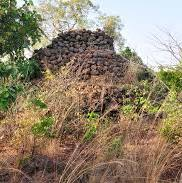
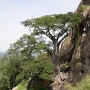
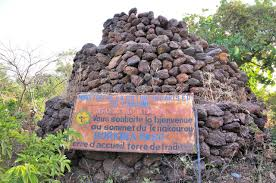

Description
Le Mont Ténakourou est le point culminant du Burkina Faso, avec une altitude d’environ 747 mètres. Il se trouve à la frontière avec le Mali, dans un environnement calme et verdoyant.
Historique
Ce mont tient son nom d’un ancien village de la région. Il est depuis longtemps un symbole naturel important, visité pour ses panoramas et sa biodiversité unique.
Galerie photos


